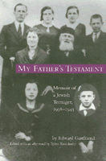

<body bgcolor="#FFFFFF" text="#000000" link="#0000FF" vlink="#CC0000" alink="#CC0000"><center><hr width="350" size="1" align="center" noshade>An intimate account of the life of a Jewish boy during the Holocaust<hr width="350" size="1" align="center" noshade><p><a href="https://cdcshoppingcart.uchicago.edu/Cart/ChicagoBook.aspx?ISBN=9781566397346&&PRESS=temple" target="_top">Buy this book!</a> | <a href="https://cdcshoppingcart.uchicago.edu/Cart/Cart.aspx?PRESS=temple" target="_top">View Cart</a> | <a href="https://cdcshoppingcart.uchicago.edu/Cart/Cart.aspx?PRESS=temple" target="_top">Check Out</a></p><p></p></center><!--none//--><h1>My Father's Testament</h1>
<H2>Memoir of a Jewish Teenager, 1938-1945</H2>
<H2><!-- Edited with an Afterword by Bj�rn Krondorfer --></H2>
<h3>Edward Gastfriend, afterword by Bj�rn Krondorfer</h3>
<P>cloth 1-56639-734-0 $66.50, Dec 99, <FONT COLOR=#990033>Out of Stock Unavailable</FONT>
<br>paper 1-56639-735-9 $30.95, Dec 99, <FONT COLOR=#990033>Available</FONT>
<BR> 187 pp
5.5x8.25
2&nbsp;map(s) 2&nbsp;figures 5&nbsp;halftones
</P><BLOCKQUOTE><I>"</I>My Father's Testament<I> is a remarkable Holocaust memoir, written in a style of Biblical simplicity that evokes a child's voice of family love and kinship brutally interrupted, and an incredible determination to survive and retain, in adulthood, the ethical imperatives of his parental home. An altogether riveting and memorable narrative."</I>
<BR>&#151<B>Chaim Potok</B><I></I></BLOCKQUOTE>
<p>This first-person account, by the youngest of eight children of a pious Jewish family from Sosnowiec in Poland, is remarkable for the faith shown by a teenager faced with the horrifying realities of the Holocaust. Edward Gastfriend, known as Lolek as a boy, remembers in heart-wrenching detail, the seven years he survived in German-occupied Poland.
<p><I>My Father's Testament</I> is an intimate portrait of a teenage boy trying to stay alive without losing his humanity&#151in hiding, in the camps, and during the death marches at the end of the war. It will engage readers interested in the study of history, the Holocaust, and religion.
<p>Embedded in this unique memoir are two other stories of fathers and sons. One lies in the moving Foreword by David R. Gastfriend, Edward's son, now a psychiatrist at Harvard Medical School. The other lies in Bj�rn Krondorfer's Afterword. Years after he met Ed Gastfriend, Krondorfer was startled to hear his father mention Blechhammer as one of the places he was stationed as a young German soldier. Blechhammer was where Lolek was held in a slave labor camp. The coincidence led this German father and son to travel back to the site to confront the Holocaust.
<BR>&nbsp;<h2>Excerpt</h2><P>Excerpt available at <a href="http://www.temple.edu/tempress">www.temple.edu/tempress</a></p>
<BR>&nbsp;<h2>Reviews</h2>
<p><i>"</i>My Father's Testament<i> will interest scholars concerned with both the complex process of how one comes to bear testimony and the often conflicted relationship between father and son in times of crisis."</i>
<br>&#151<b><i><a href="http://www.findarticles.com/p/articles/mi_m0411/is_4_50/ai_82469828" target="new">Judaism</a></i></b>
<BR>&nbsp;<P><P>Visit <A HREF=http://nau.edu/CAL/CCS/Faculty-and-Staff/Krondorfer/ TARGET="_new">Bj&#246rn Krondofer's website</A>.</P><BR>&nbsp;<br>
<h2>Contents</h2><P>
<p>Foreword &#150 David R. Gastfriend, M.D.
<br>Preface &#150 Bj�rn Krondorfer
<br>Acknowledgments &#150 Edward Gastfriend
<br>My Father's Testament: Memoir of a Jewish Teenager, 1938-1945
<br>Photos
<br>Afterword &#150 Bj�rn Krondorfer
</P><BR>&nbsp;<H2>About the Author(s)</H2>
<P><B>Edward Gastfriend</b> and <b>Bj�rn Krondofer</b> are active in Holocaust education. Chairman of the Jewish Holocaust Survivors in Philadelphia, Gastfriend spearheaded a project to memorialize the millions who perished during the Holocaust. Krondorfer, who is the Director of Martin-Springer Institute and Endowed Professor of Religious Studies at the Northern Arizona University, is the author of several books, including <i>Remembrance and Reconciliation: Encounters Between Young Jews and Germans</i>.</P>
<BR><H2>Subject Categories</H2>
<p><A HREF="/tempress/jewish.html" TARGET="_top">Jewish Studies</a>
<BR><A HREF="/tempress/general.html" TARGET="_top">General Interest</a>
<BR><A HREF="/tempress/biography.html" TARGET="_top">Biography/Memoir/Autobiography</a>
</p>
<p align="center"><a href="https://cdcshoppingcart.uchicago.edu/Cart/ChicagoBook.aspx?ISBN=9781566397346&&PRESS=temple" target="_top">Buy this book!</a> | <a href="https://cdcshoppingcart.uchicago.edu/Cart/Cart.aspx?PRESS=temple" target="_top">View Cart</a> | <a href="https://cdcshoppingcart.uchicago.edu/Cart/Cart.aspx?PRESS=temple" target="_top">Check Out</a></p><p><font face="Arial" size="1"><a href="copyright.html" onMouseOver="window.status='Web Copyright Policy';return true;" onMouseOut="window.status=''" title="Web Copyright Policy">&copy;</a> 2015 <a href="http://www.temple.edu" target="new" onMouseOver="window.status='Link to Temple University home page';return true;" onMouseOut="window.status=''" title="Link to Temple University home page">Temple University</a>. All Rights Reserved. http://www.temple.edu/tempress/titles/1500_reg.html</font></p>